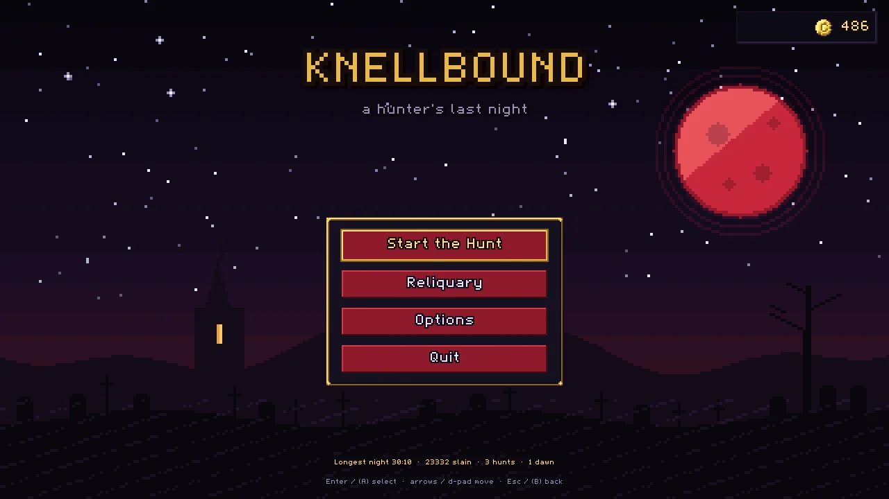
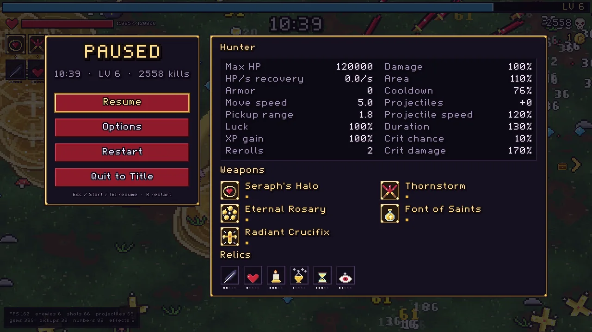
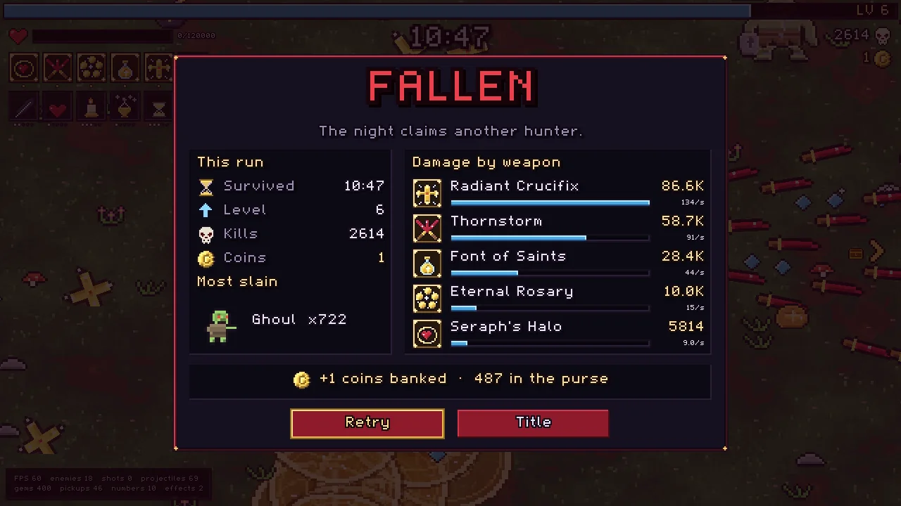
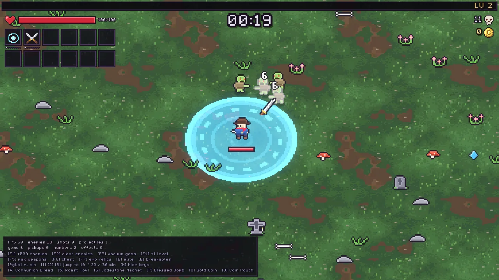
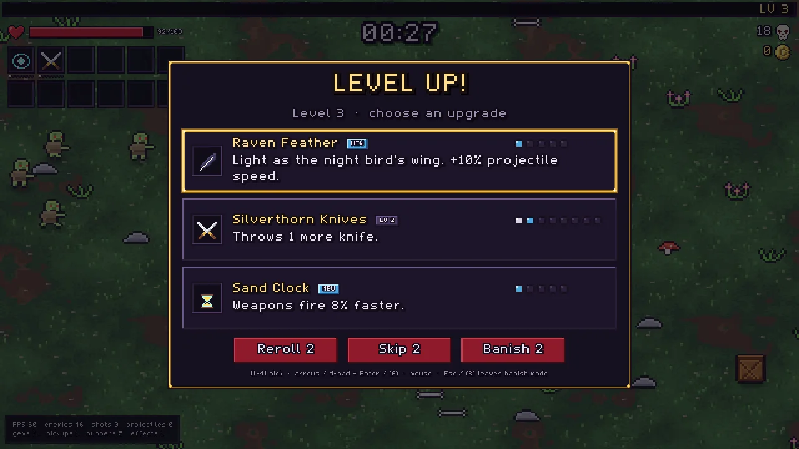
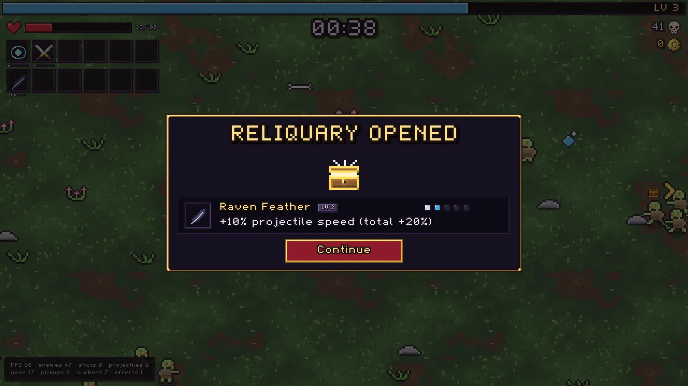

UI, Tema dan Alur Layar
Sampai Fase 6 UI memakai tampilan default Godot. Fase 7 memberi seluruh game satu identitas visual lewat satu file Theme, menambah layar judul, menu pause dengan opsi, ringkasan run, dan transisi fade antar-scene.



damage_enemy(source).

Card berisi OfferView (ikon, badge NEW/LV, pips). Bandingkan dengan versi Fase 2 di Bab 2.
Theme: satu file untuk semua Control
Theme adalah Resource berisi gaya per tipe Control: warna font Label, StyleBox tombol untuk normal/hover/pressed/focus, dst. Jika dipasang di , semua Control di game memakainya tanpa override satu per satu. Type variation adalah "subtipe" bernama, misalnya TitleLabel yang mewarisi Label tapi berukuran 72 dan berwarna emas. Di Inspector Label kamu tinggal isi theme_type_variation = TitleLabel.
318[resource]
319default_font = ExtResource("f_font")
320default_font_size = 24421TitleLabel/base_type = &"Label"
422TitleLabel/colors/font_color = Color(0.914, 0.725, 0.286, 1)
423TitleLabel/colors/font_shadow_color = Color(0.43, 0.06, 0.1, 1)
424TitleLabel/constants/shadow_offset_x = 4
425TitleLabel/constants/shadow_offset_y = 4
426TitleLabel/font_sizes/font_size = 72
427XpBar/base_type = &"ProgressBar"
428XpBar/styles/background = SubResource("sb_bar_frame")
429XpBar/styles/fill = SubResource("sb_bar_xp")Variasi yang tersedia: Label TitleLabel HeaderLabel TimerLabel GoldLabel MutedLabel SmallLabel; Button Card; PanelContainer BloodPanel HolyPanel InsetPanel + badge; Panel SlotPanel SlotMax SlotEvo; ProgressBar XpBar HpBar BossBar.
Panel 9-slice dari pixel art
Panel dan tombol adalah StyleBoxTexture: gambar kecil yang dipotong 9 bagian. Sudut tetap, sisi dan tengah meregang. texture_margin = lebar sudut dalam piksel tekstur; content_margin = jarak isi dari tepi.
35[sub_resource type="StyleBoxTexture" id="sb_panel"]
36content_margin_left = 22.0
37content_margin_top = 18.0
38content_margin_right = 22.0
39content_margin_bottom = 18.0
40texture = ExtResource("t_panel")
41texture_margin_left = 10.0
42texture_margin_top = 10.0
43texture_margin_right = 10.0
44texture_margin_bottom = 10.0Art UI digenerate oleh gen_sprites.ui_panels() dengan aturan 1 piksel art = 2 piksel layar di 720p. Karena teksturnya digambar 2× lebih kecil dan diperbesar oleh StyleBox, margin di tema = margin art × 2.
- Klik kanan
ui/theme/→ , simpangame_theme.tres. Klik dua kali: panel Theme editor terbuka di bawah. - → Button. Di tab StyleBox, isi
normal/hover/pressed/focus/disableddengan New StyleBoxTexture dan tekstur dariart/ui/. - Untuk variasi: Add Type
TitleLabel, lalu di properti Base Type pilih Label. - Pasang di Project Settings → GUI → Theme → Custom.
Font bitmap buatan sendiri
Font adalah BMFont (art/ui/font.fnt + font.png) yang juga digenerate oleh gen_sprites.font_sheet(): desain 5×7 sendiri, huruf besar/kecil, angka, tanda baca, dan simbol · — × →, outline gelap 1 px sudah di-bake ke gambar. Keuntungan: tidak ada lisensi pihak ketiga, dan font pasti cocok dengan gaya pixel art.
- Ukuran dasar 12. Di tab Import font,
scaling_mode = Integer: hanya kelipatan bulat yang tajam. Pakai 12, 24, 48, 72. - Warna font = modulasi isi putih glyph, outline tetap gelap. Bayangan lewat
font_shadow_colorkarena properti outline font tidak berlaku untuk bitmap font.
Layout yang tahan ukuran layar
Stretch canvas_items + expand (Bab 0) menskalakan UI dari 1280×720. Di dalam scene, semua layar memakai anchor dan container, bukan posisi absolut: CenterContainer memusatkan panel, VBoxContainer/HBoxContainer menyusun anak dengan separation, MarginContainer memberi tepi. Saat jendela 21:9, panel tetap di tengah, HUD tetap di sudut.
UI di game 3D diletakkan di CanvasLayer: lapisan 2D di atas viewport 3D yang tidak ikut kamera. Nomor layer menentukan urutan: HUD 1, LevelUpScreen 10, ChestScreen 11, PauseMenu dan GameOverScreen 20, SceneFader 128 (selalu paling atas).
HUD hemat
HUD di-refresh dari Game._process (urutan tetap satu tempat). Memformat string tiap frame itu murah untuk 5 label, tapi mengganti text memicu perhitungan ulang layout. Jadi teks hanya ditulis ulang saat nilai bulatnya berubah:
75func refresh(game: Game) -> void:
76 var p := game.player
77 hp_bar.max_value = p.max_hp
78 hp_bar.value = p.hp
79 p.hp_bar.set_fraction(p.hp / p.max_hp)
80 var hp_i := ceili(p.hp)
81 var max_i := roundi(p.max_hp)
82 if hp_i != _hp or max_i != _max_hp:
83 _hp = hp_i
84 _max_hp = max_i
85 hp_label.text = "%d/%d" % [hp_i, max_i]
86 xp_bar.value = game.leveling.progress()
87 if game.leveling.level != _level:
88 _level = game.leveling.level
89 level_label.text = "LV %d" % _level
90 var secs := int(game.elapsed)
91 if secs != _seconds:
92 _seconds = secs
93 time_label.text = fmt_time(secs)
94 if game.kills != _kills:
95 _kills = game.kills
96 kills_label.text = str(_kills)
97 if game.coins != _coins:
98 _coins = game.coins
99 coins_label.text = str(_coins)
100 _refresh_boss(game)
101 _refresh_loadout(p)
102 _refresh_arrows(game)
103 if debug_panel.visible:
104 debug_label.text = "FPS %d enemies %d shots %d projectiles %d\ngems %d pickups %d numbers %d effects %d" % [
105 Engine.get_frames_per_second(), game.swarm.count, game.enemy_shots.count,
106 game.projectiles.count, game.gems.count, game.pickups.count,
107 game.numbers.count, game.effects.count]HP bar di bawah pemain adalah WorldHpBar: quad billboard dengan shader world_bar.gdshader tanpa depth test, dan parameter shader-nya hanya ditulis saat jumlah piksel isi berubah.
Menu pause dan Options
Semua layar mengikuti aturan Fase 2: view yang memancarkan sinyal. PauseMenu emit resume_requested, restart_requested, quit_requested; Game yang meng-unpause, membank koin, dan pindah scene.
268func _set_paused(on: bool) -> void:
269 get_tree().paused = on
270 if on:
271 pause_menu.open(self)
272 else:
273 pause_menu.close()
274
275
276func restart() -> void:
277 _end_run()
278 SceneFader.reload()
279
280
281func quit_to_title() -> void:
282 _end_run()
283 SceneFader.change_scene("res://scenes/title.tscn")
284
285
286## Banks the run into SaveData exactly once (death, restart or quitting).
287func _end_run() -> RunReward:
288 if run_reward == null:
289 run_reward = SaveData.bank_run(coins, elapsed, kills, director.final_phase)
290 return run_rewardOptionsPanel dipakai di dua tempat (title dan pause), jadi ia scene sendiri yang di-instance dua kali. Ia tidak menyimpan apa pun: ia memanggil setter di autoload Settings.
Autoload: Settings dan SceneFader
Autoload adalah node yang Godot buat sekali saat game mulai dan letakkan di /root, di luar scene yang sedang aktif. Ia bertahan saat scene diganti dan bisa diakses dari mana saja dengan namanya (Settings.screen_shake). Daftarkan di : pilih skrip, beri nama, Add. Urutan di daftar = urutan _ready, dan itu penting di Fase 8.
8signal changed
9
10const BUSES := [&"Master", &"SFX", &"BGM"]
11
12## Linear 0..1, indexed like BUSES.
13var volumes: Array[float] = [1.0, 0.8, 0.7]
14var screen_shake := true
15var damage_numbers := true
16var fullscreen := false
17
18
19func _ready() -> void:
20 process_mode = Node.PROCESS_MODE_ALWAYS
21 _load()
22 _apply()
23
24
25func set_volume(bus: int, linear: float) -> void:
26 volumes[bus] = clampf(linear, 0.0, 1.0)
27 _apply_bus(bus)
28 _save_and_emit()
29
30
31func set_screen_shake(on: bool) -> void:
32 screen_shake = on
33 _save_and_emit()
34
35
36func set_damage_numbers(on: bool) -> void:
37 damage_numbers = on
38 _save_and_emit()
39
40
41func set_fullscreen(on: bool) -> void:
42 fullscreen = on
43 _apply_window()
44 _save_and_emit()
45
46
47func _save_and_emit() -> void:
48 var o := SaveData.options
49 for k in BUSES.size():
50 o["volume_" + String(BUSES[k]).to_lower()] = volumes[k]
51 o["screen_shake"] = screen_shake
52 o["damage_numbers"] = damage_numbers
53 o["fullscreen"] = fullscreen
54 SaveData.queue_save()
55 changed.emit()Settings memancarkan changed; Game menyambungkannya ke _apply_settings() yang meneruskan dua opsi gameplay ke CameraRig dan DamageNumberField. Volume diterapkan langsung ke bus audio (AudioServer.set_bus_volume_db). Di Fase 7 nilai disimpan di user://settings.cfg; Fase 8 memindahkannya ke dalam save.
SceneFader adalah autoload CanvasLayer berisi satu ColorRect hitam. Semua pergantian scene lewat sini:
1extends CanvasLayer
2## Autoload `SceneFader`: every scene change goes through here so it fades to
3## black, swaps the scene (unpausing the tree), then fades back in. Input is
4## blocked while a fade runs, so a double press cannot start two changes.
5
6const FADE_OUT := 0.22
7const FADE_IN := 0.3
8
9var busy := false
10
11var _rect := ColorRect.new()
12
13
14func _ready() -> void:
15 layer = 128
16 process_mode = Node.PROCESS_MODE_ALWAYS
17 _rect.color = Color(0.02, 0.01, 0.04, 1.0)
18 _rect.set_anchors_and_offsets_preset(Control.PRESET_FULL_RECT)
19 _rect.mouse_filter = Control.MOUSE_FILTER_IGNORE
20 add_child(_rect)
21 # The first scene fades in from black too.
22 _fade_in()
23
24
25func change_scene(path: String) -> void:
26 if busy:
27 return
28 busy = true
29 _rect.mouse_filter = Control.MOUSE_FILTER_STOP
30 var t := create_tween()
31 t.tween_property(_rect, "color:a", 1.0, FADE_OUT)
32 await t.finished
33 get_tree().paused = false
34 get_tree().change_scene_to_file(path)
35 # change_scene_to_file swaps at the end of the frame: wait for the new one.
36 await get_tree().scene_changed
37 _fade_in()
38
39
40func reload() -> void:
41 change_scene(get_tree().current_scene.scene_file_path)
42
43
44func _fade_in() -> void:
45 busy = true
46 _rect.mouse_filter = Control.MOUSE_FILTER_STOP
47 _rect.color.a = 1.0
48 var t := create_tween()
49 t.tween_property(_rect, "color:a", 0.0, FADE_IN)
50 await t.finished
51 _rect.mouse_filter = Control.MOUSE_FILTER_IGNORE
52 busy = false
53
54
55func _input(event: InputEvent) -> void:
56 # Swallow input while fading so nothing reacts mid-transition.
57 if busy and not (event is InputEventMouseMotion):
58 get_viewport().set_input_as_handled()- await
await t.finishedmenunggu tween selesai tanpa memblokir game. Fungsi berlanjut di frame tween selesai. Ini coroutine GDScript. - pausedTree di-unpause sebelum ganti scene. Kalau tidak, scene baru (mis. title dari menu pause) lahir dalam keadaan pause.
- scene_changed
change_scene_to_filemenukar scene di akhir frame; menunggu sinyalscene_changedmemastikan fade-in dimulai saat scene baru sudah ada. - _inputSelama fade, input ditelan. Klik ganda pada "Retry" tidak memulai dua pergantian.
Alur scene
- Game dibuka di title; semua tombol bisa dipilih dengan mouse, panah + Enter, dan gamepad.
- Esc saat run: menu pause muncul, dunia berhenti; Options → geser volume SFX, matikan screen shake, kembali, bom tidak lagi menggetarkan layar.
- Mati: layar FALLEN dengan statistik; R = retry; setiap pindah scene memudar.
- Ubah ukuran jendela menjadi sangat lebar atau tinggi: panel tetap di tengah, HUD di sudut.
- Font buram. Ukuran bukan kelipatan 12, atau filter canvas tidak nearest.
- Tombol tidak bisa dipilih dengan keyboard. Tidak ada yang memanggil
grab_focus()saat layar dibuka, atau tetangga fokus salah. LevelUpScreen menetapkanfocus_neighbor_*eksplisit karena kartu lebar "mencuri" navigasi kiri-kanan. - Scene baru langsung beku. Pindah scene dari keadaan pause tanpa
get_tree().paused = false. - Autoload belum siap. Settings membaca SaveData di
_ready; jika SaveData terdaftar di bawah Settings, datanya masih kosong.
- Buat type variation
WarningLabel(Label, oranye, ukuran 24) di tema dan pakai untuk teks "Boss incoming" sementara. - Tambahkan opsi "Tampilkan FPS" ke OptionsPanel dan Settings, simpan seperti opsi lain.
- Ganti durasi
FADE_OUTSceneFader ke 1 detik dan rasakan kenapa transisi pendek lebih baik untuk tombol Retry.